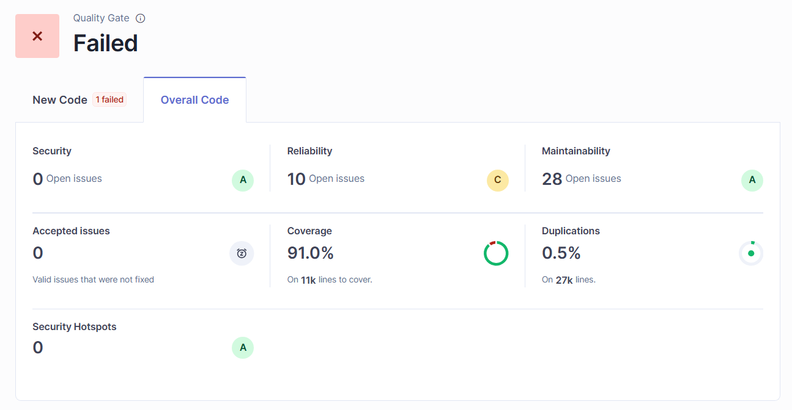
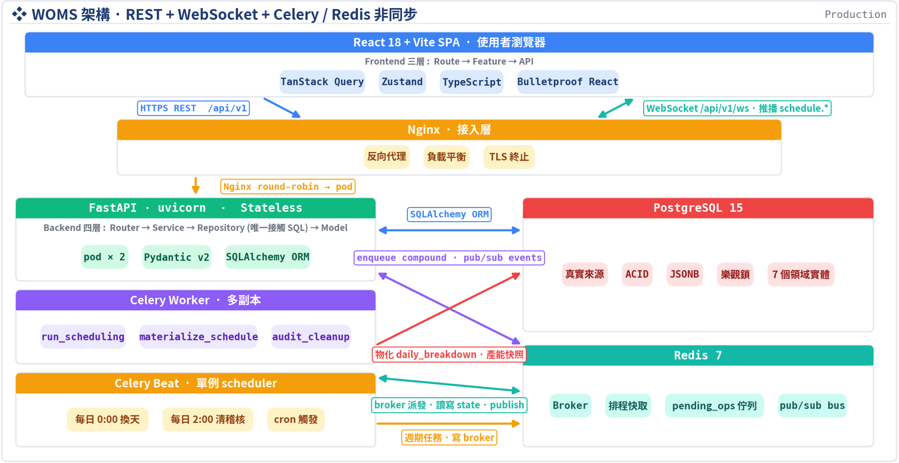
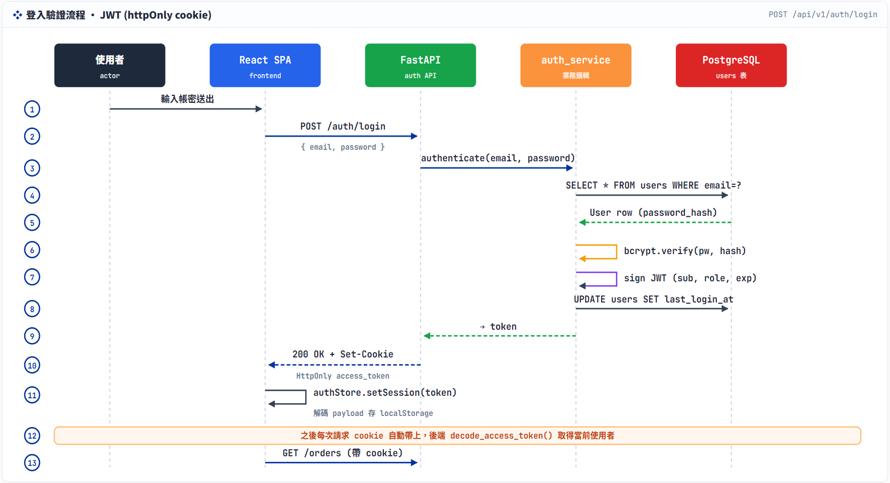
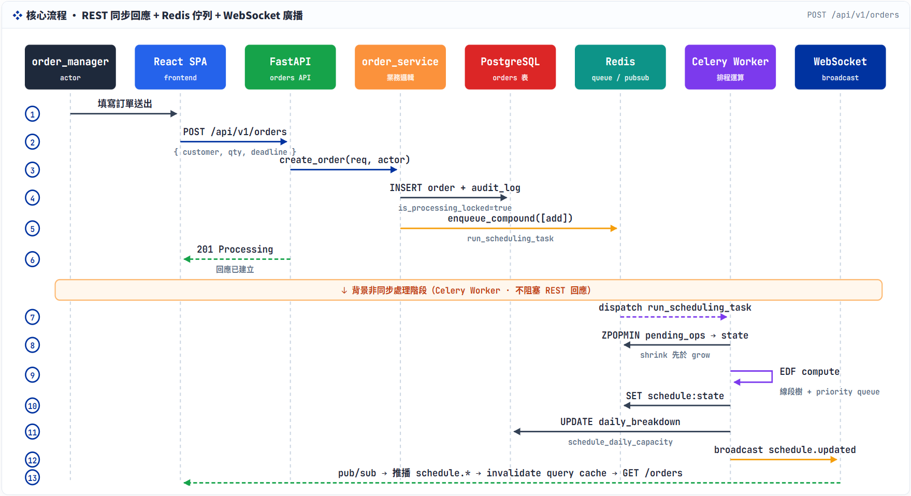
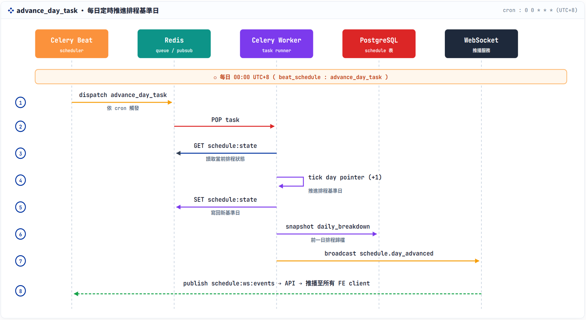
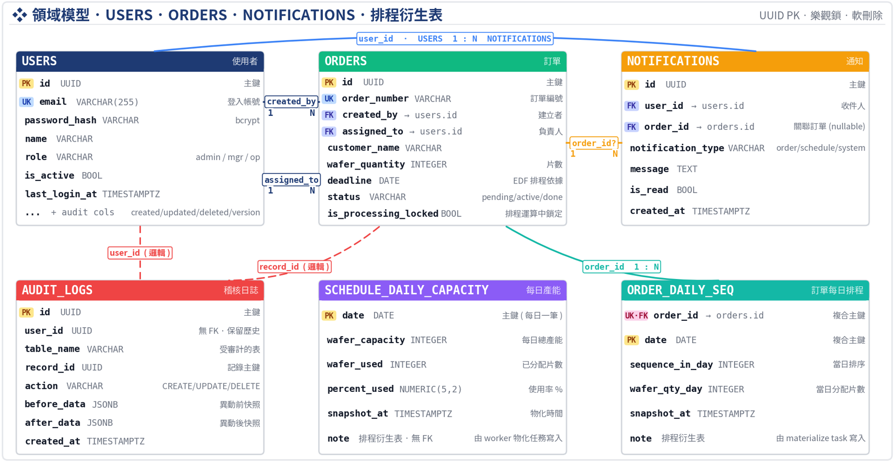
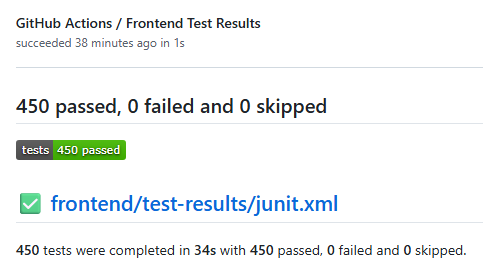
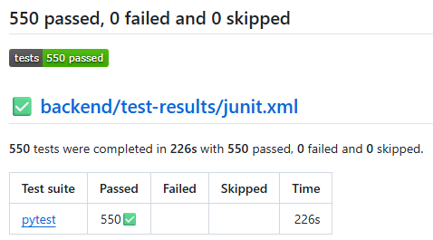
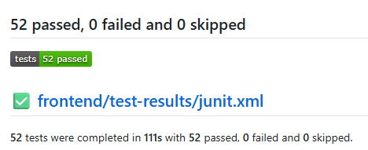

晶圓代工訂單管理 + 智慧排程系統






整體 pipeline 由 佇列解耦、Worker 批次處理、即時推播三段組成。
接收使用者請求，鎖定訂單後將操作放入佇列。
暫存待處理的訂單操作與排程狀態。
從佇列取出整批操作，計算可接受的批次後更新排程。
排程演算法獨立為 純邏輯模組，與框架／儲存層完全解耦 → 易測試、易維護、易重建。
批次准入 (Batch Admission)：用二分搜一次找出最大可接受批次，避免逐筆計算的重複成本。
N 筆訂單操作需做 N 次獨立的排程結構維護。
用二分搜找最大可接受批次後，只做 1 次結構維護。
Worker 將佇列中的 8 筆操作一次讀進記憶體。
兩個關鍵設計：Fast / Slow 路徑解耦（記憶體判斷／背景寫 DB）＋ 投機式平行二分搜（多 Worker 同時試算）。
算法判斷快、DB 寫入慢，因此將兩者拆開。
在記憶體中快速判斷批次可不可行，確認後即刻回應使用者，不用等資料庫。
背景執行寫入 DB，並將多筆寫入合併以降低資料庫負擔。
多個 Worker 同時試算不同的批次大小，把循序的 log N 輪壓成單輪並行。
三道防線防止 silent failure；rebuild 機制應對 Redis 異常或演算法升版。
從佇列取出操作時，立即檢查欄位與格式。發現異常立即留下紀錄並告警，不會默默讓訂單卡死。
每次移除訂單後，驗證「樹中容量」與「實體訂單數量」是否一致。對不上立即中斷錯誤，並將影響範圍限縮在該筆訂單。
當 Redis 被清空、損毀或演算法升版時，可直接從 DB 重掃所有訂單，重新計算並重建記憶體中的排程結構。
Worker 唯一寫入者 + 悲觀鎖 + 樂觀鎖雙重防護，確保排程狀態與 DB 永遠一致。
只有 Worker 能寫入訂單欄位，Producer 端僅負責鎖定與排入佇列
悲觀鎖確保一次只有一個請求能寫；樂觀鎖確保寫入時資料未被別人改過。
擋的是：同筆訂單同時間湧入的多筆 UPDATE，強制排隊處理。
擋的是：編輯頁開很久後存檔，造成覆蓋掉別人改過的資料。比對版號才允許寫入。
雙路徑通知：WebSocket 即時推送（毫秒級反映）＋ Notifications 資料表（離線也不漏訊息）。
Worker 完成排程後立即廣播，前端即時收到並更新畫面。
⚡ 讓使用者毫秒級看到排程結果與容量變化。
重要事件同步寫入資料庫，即使使用者離線也不會漏掉。
💾 下次登入時仍可看到未讀通知。
本模組在六項 NFR 上的實作摘要：
批次准入二分搜 + 投機式平行，可透過增加 Worker 擴展。
Fast / Slow 解耦：在記憶體中快速判斷、背景非同步寫入 DB。
避免 silent failure：佇列訊息格式檢查 + 演算法內部狀態檢查。
提供 rebuild 功能：可從 DB 重新計算並重建排程狀態。
Worker 為唯一寫入者 + 悲觀鎖與樂觀鎖雙重防護。
排程演算法為純邏輯模組，由 Worker、單元測試、災後重建共用。
Component / Form / UI State
表單驗證、modal、欄位狀態、錯誤訊息
快速回饋畫面邏輯錯誤，不啟動完整系統。

API / Service / Worker
權限、商業規則、排程任務、concurrency
使用真實 Postgres + Redis 覆蓋鎖與佇列行為。

Playwright
登入 / 訂單 / RBAC / 日曆 / 通知 / Audit Log
前後端都穩定後，再驗證完整使用者流程。

LINE COVERAGE
Backend tests
BRANCH COVERAGE
Decision paths
Scheduling Correctness Highlight
==
證明批次優化沒有破壞演算法正確性。
準備相同輸入，避免測試只驗證單一路徑。
一邊是效能優化，一邊是逐筆處理基準。
不是只看有沒有跑完，而是確認結果沒有被優化改壞。